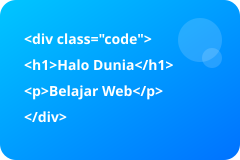

Bangun Fondasi Desain Responsif
Halaman ini memanfaatkan Bootstrap untuk komponen siap pakai serta CSS Grid untuk tata letak yang fleksibel. Dengan pendekatan ini, tampilan web dapat beradaptasi mulus di berbagai ukuran perangkat.

Inspirasi Multimedia
Belajar tidak harus membosankan! Tonton video singkat berikut untuk mendapatkan inspirasi desain dan dengarkan podcast ringkas seputar tren teknologi web terbaru.
Komponen Interaktif
Formulir singkat berikut hanya menggunakan beberapa baris JavaScript. Teknik modular membuat kode mudah dikembangkan untuk kebutuhan lebih lanjut seperti validasi lanjutan ataupun integrasi API.